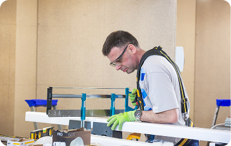

Обслуживание и ремонт оборудования РЗА
Основным назначением релейной защиты является выявление места возникновения короткого замыкания и быстрое автоматическое отключение выключателей поврежденного оборудования или участка сети, а также выявление нарушений нормальных режимов работы оборудования и подача предупредительных сигналов обслуживающему персоналу или отключение оборудования с выдержкой времени.
Читать подробнее